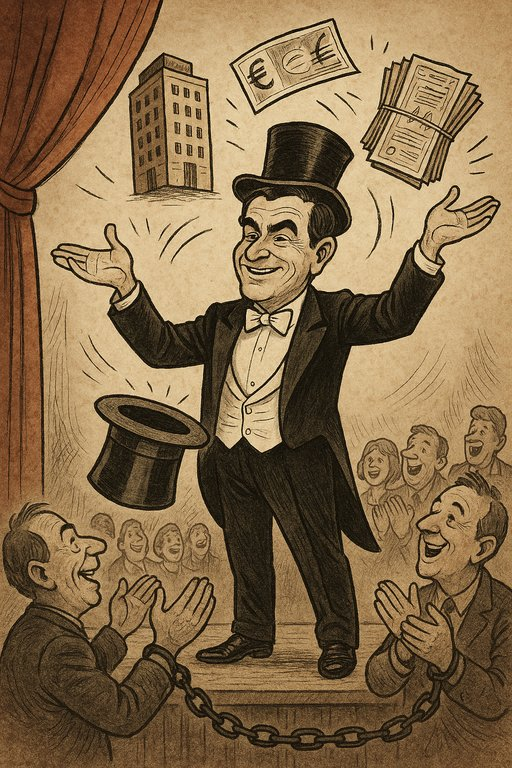

O Terceiro Dragão: Entre a Liberdade de Pensar e o Conforto de Pertencer
Publicado em 2025-06-02 09:26:27
Por Francisco Gonçalves, Fragmentos do Caos
“E eis que chega o terceiro dragão, o pior deles todos...”
— Agostinho da Silva
Vivemos tempos de ruído constante e de ideias recicladas, onde os partidos, as seitas ideológicas e os “influencers de consciência” se erguem como novos oráculos do pensamento pronto-a-consumir. Nesse cenário, recordar Agostinho da Silva é como abrir uma janela num quarto abafado.
Num excerto poderoso e quase profético, escrito em 1973, ele desmascara o mais subtil dos inimigos: a nossa cedência à preguiça de pensar, essa tentação de nos diluirmos no grupo, de nos anularmos no partido, na igreja, no mestre, no “guru digital”.
“Na realidade nós somos piores, porque no nosso caso o leite já está digerido.”
Esta imagem brutal diz tudo: não apenas aceitamos doutrinas alheias, como já nos chegam mastigadas — embaladas em slogans, tweets e chavões. E assim vamos deixando de ser seres pensantes para nos tornarmos recetáculos obedientes.
Agostinho propõe a única saída digna: a singularidade da consciência. Pensar por si. Agir por si. Errar por si. Mas nunca ceder o volante da alma a outrem.
“Podes, e deves, ter ideias políticas, mas, por favor, as tuas ideias políticas…”
Este artigo é um apelo à lucidez. Não contra a convivência ou o coletivo — mas contra a dissolução da vontade e da crítica no seio de máquinas de obediência. Porque “parte” é, de facto, o oposto de todo. E um mundo fragmentado por partidos, crenças cegas e rituais de pertença é um mundo que esqueceu a totalidade do humano.
Partilha esta mensagem. Desperta consciências. Queima os biberões ideológicos. Porque pensar é o último ato de resistência.